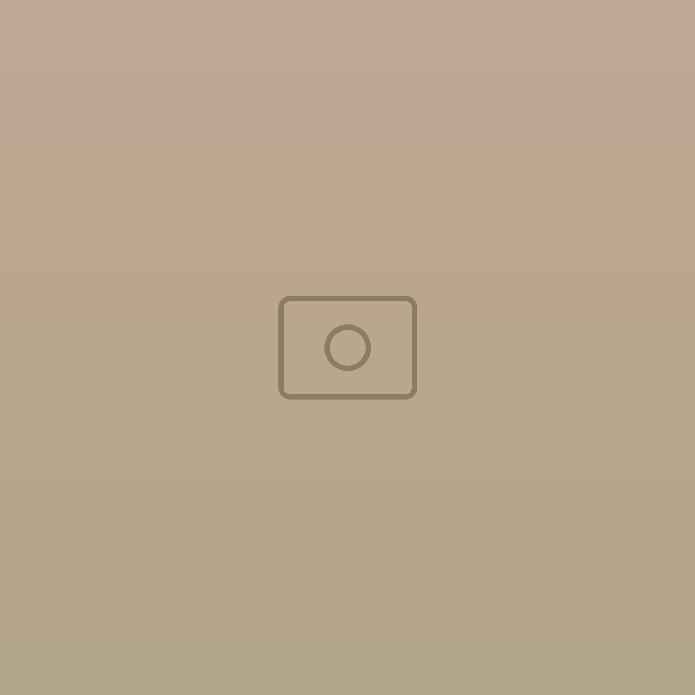
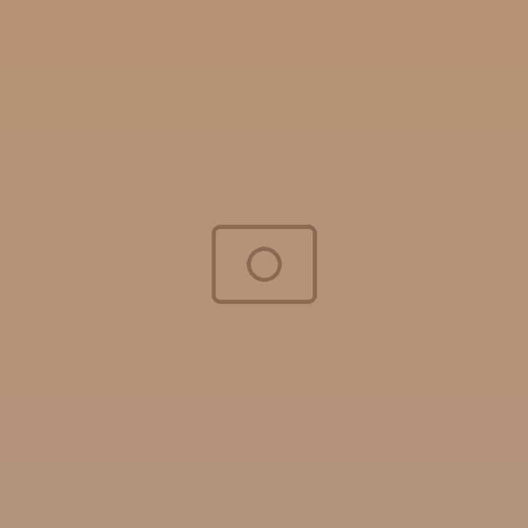
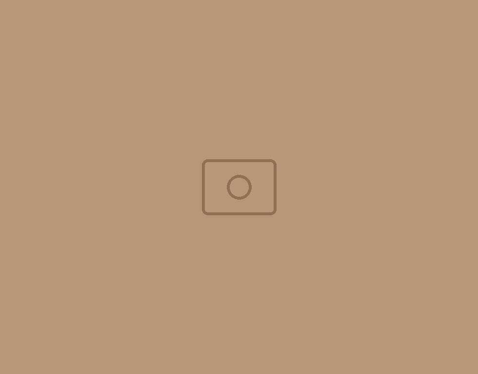
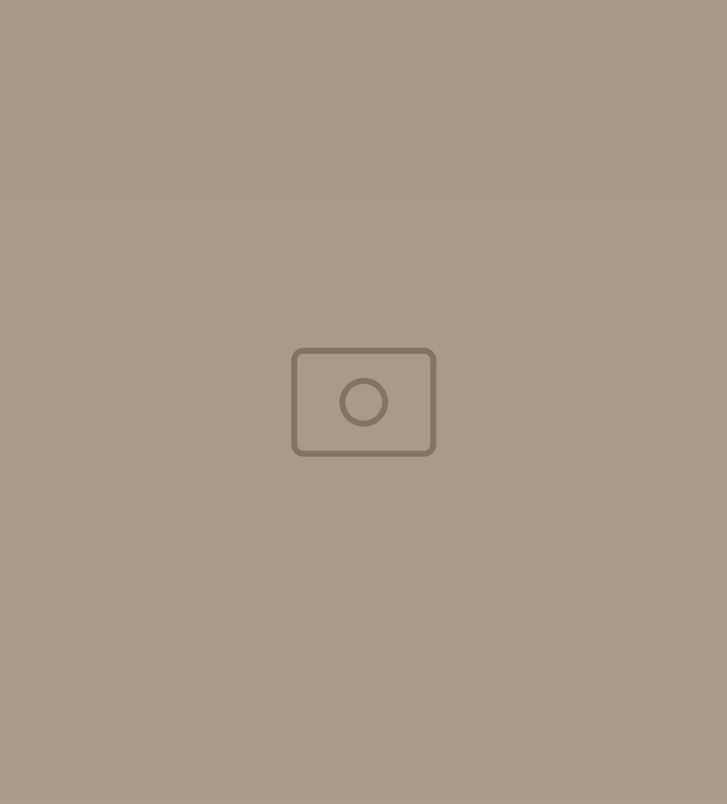
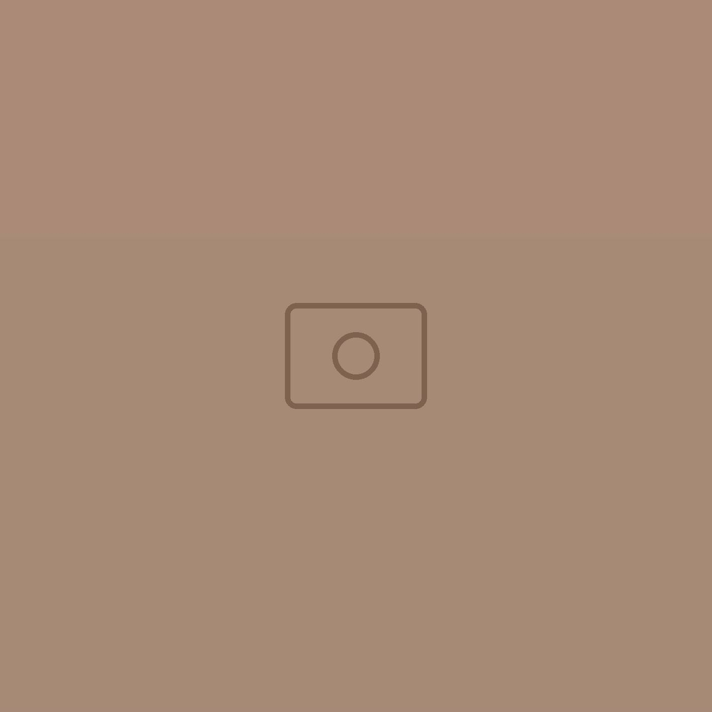
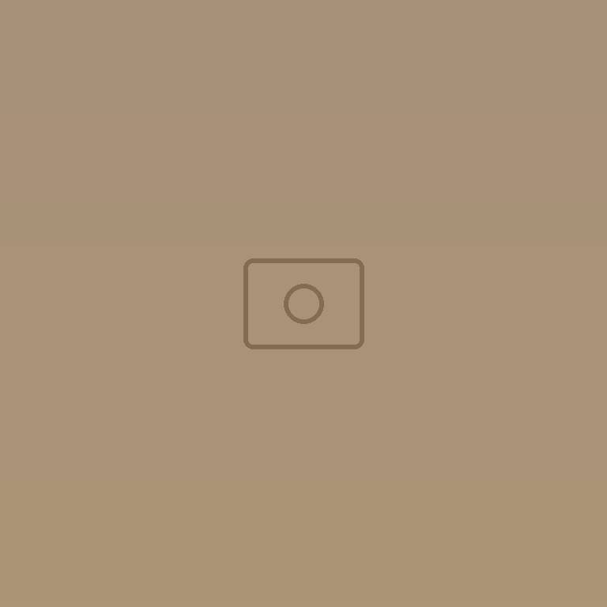
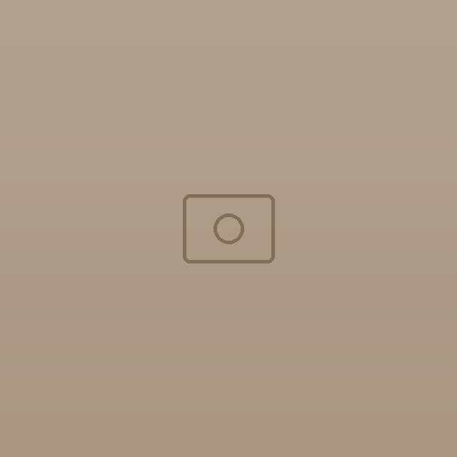
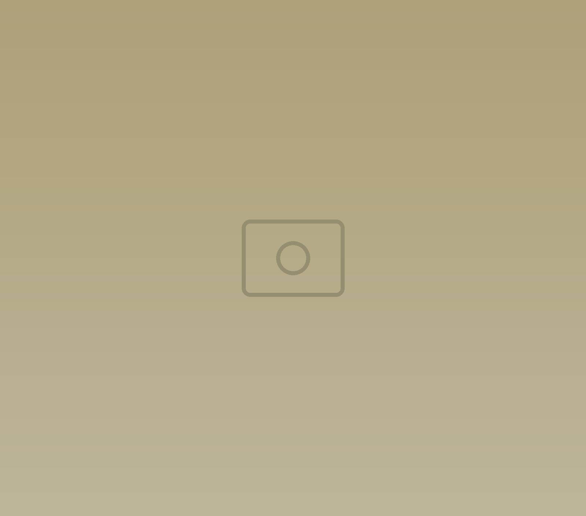
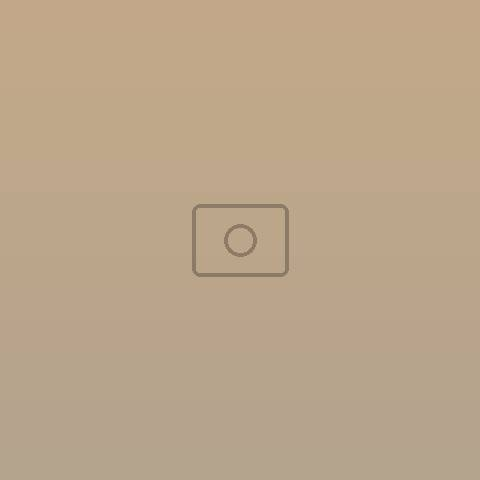
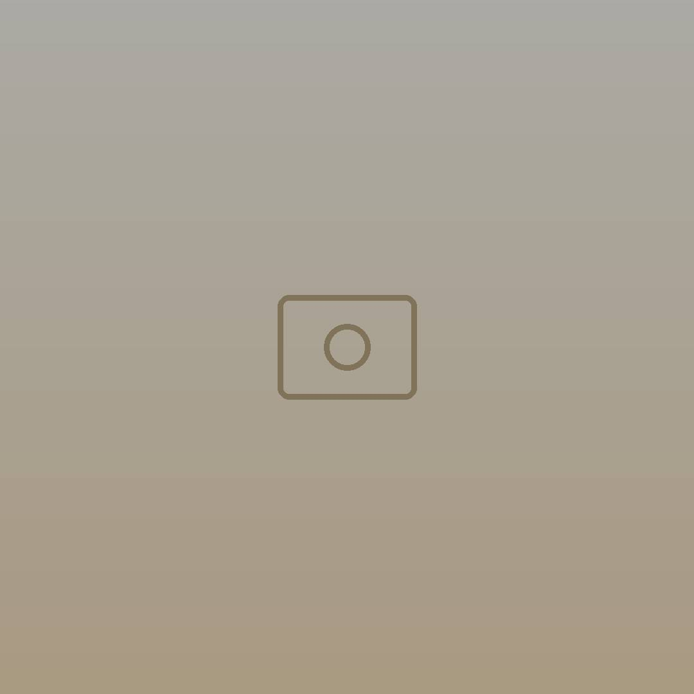

Cuisine tunisienne · La Marsa
L’Olivier àCouscous
Tous les jours, une nouvelle recette cuisinée comme chez soi.
- Sur place
- À emporter
- En livraison


Couscous à l’agneau et aux coingsPlat du jour du vendredi 16 octobre
À l’ardoise
Les derniers plats du jour
Un plat différent chaque jour, affiché sur notre ardoise. Pour être sûr d’avoir votre part, un coup de fil suffit.
Langue aux olives

Couscous au merguez
Poulet aux oignons caramélisés et borghol

Couscous aux calamars
Couscous à l’agneau et aux coings

Kamounia de seiches
Le plat de demain ? appelez-nous
La spécialité
Le couscous dans tous ses états
De la mer ou de la terre, à la tunisienne ou à la marocaine : chaque semaine, le grain change de compagnie.

Couscous royal
viande, boulettes et osben de bœuf
Couscous marocain
à l’agneau, pruneaux et amandes
À la boutargue
« adam khout »

Aux sardines
la tradition de la côte
Au poisson et pommes
poisson entier, sauce aux pommes
Au poulpe
pois chiches et légumes
Aux calamars
calamar farci, piment grillé

Couscous gingembre
et poulet aux olives
Et aussi
La cuisine de nos grands-mères
Les jours sans couscous, l’ardoise passe aux grands classiques mijotés de la cuisine tunisienne.
- Mloukhia
- Kamounia de seiches
- Ganaouia au poulet
- Markat khodra au bœuf
- Hergma
- Madfouna / bkaila
- Douida à l’agneau
- Langue aux olives
- Boulettes aux épinards
- Poisson complet, testira & chips
- Gigot d’agneau de 7 h
- Bœuf aux oignons caramélisés

Commander
À table, à emporter ou chez vous
Sur place
En centre-ville, au cœur de La Marsa.
À emporter
Appelez, on prépare votre plat du jour, vous passez le récupérer.
En livraison
Le plat du jour livré : commandez par téléphone.
Nous trouver
Centre-villeLa Marsa
- Tél.
- 00 000 000
- Horaires
- Plat du jour annoncé chaque matin à l’ardoise
